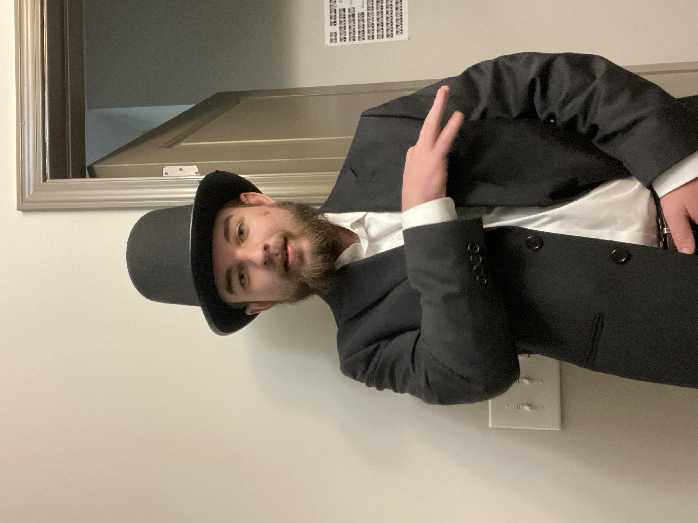

Jonathan Evnas's Digital Resume
Education: Bachelors of Science in Electrical Engineering
Job Skills
- Frequency Response and Signal Processing
- Circuit DC/AC Analysis
- Knowledgeable in Software such as Quartus, Multisim/Spice, and AutoCAD
Job Experience
ADCO Electric Inc.
- -Gained Experience working in AutoCAD on a professional level.
- -Experienced working with a team to complete the full electrical design process.
- -Learned how to design the electrical systems of commercial buildings.
